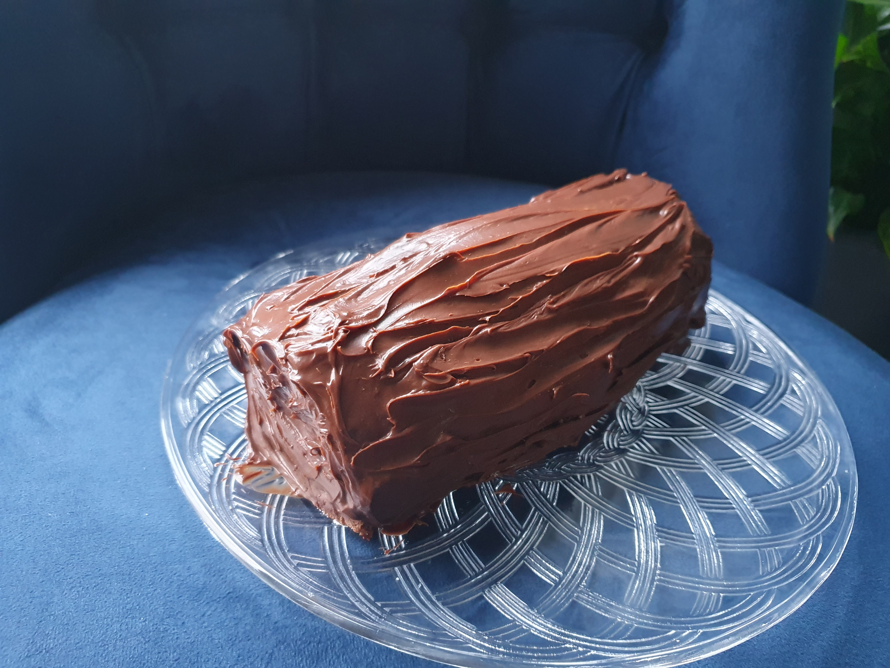
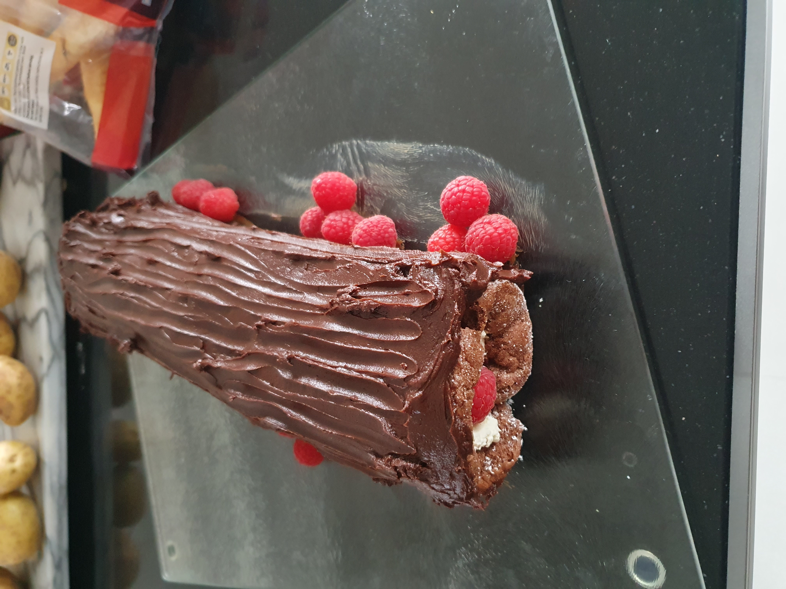

Desserts and Confectionery
Bakewell tart
Pastry:
250g P flour
40g icing sugar
1/4tsp salt
150g butter
Filling:
80g melted butter
130g sugar
60g P flour
10g cornflour
90ml aquafaba
200g ground almonds
1tsp BP
1/2tsp almond extract
6tbsp raspberry jam
Topping:
150g raspberries
flaked almonds
180°
23-25cm tart
Method
- Shape pastry into disc and chill half an hour.
- Roll and line tart.
- Prick and freeze 20mins.
- Bake with beans 20mins, then without 10mins until pale golden then set aside.
- Whisk melted butter and sugar, then whisk in flours.
- Gradually whisk in aquafaba, then rest of frangipane.
- Assemble and bake 30-45mins.
Chocolate caramels
100g dark brown sugar
2tbsp water
2tbsp tahini or nut butter
2tbsp coconut oil or vegan butter
1/4 tsp fine sea salt
1/2 tsp vanilla
300g dark chocolate
35 ice cubes
Method
- Heat sugar and water until dissolved and starting to bubble - swirl if necessary - 2-3 mins max.
- Remove from heat and add oil, tahini, salt and vanilla and stir.
- Heat very low for 30 seconds if won’t come together.
- Cool - will be very runny at first, but will thicken as cools.
- Once cool, line moulds with 3mm chocolate and leave couple of mins.
- Then fill with cool caramel and top with 2-3mm chocolate.
- After 30 mins in freezer, can demould.
Notes
- Thought the tahini was quite strong, but were liked by others. Maybe peanut butter would be nice?
Chocolate fudge
350g dark chocolate
370g vegan condensed milk
chopped nuts to decorate
20cm square
Method
- Melt over low heat, stirring occasionally until smooth and silky.
- Press into tin and chill for 1 hour or until set.
Notes
- Was ok, would be ok use of leftover condensed milk.
- One third of recipe in large glass clip tub was under 2cm thick.
Chocolate pudding
65g sugar
2tbsp cocoa
1.5tbsp cornstarch
295ml milk
15g butter
0.5tsp vanilla
3 dessert pots
Method
- Whisk sugar, cocoa and cornstarch until no lumps in a pan.
- Add milk and combine.
- Heat to simmer and whisk often.
- Simmer about 3 mins until slightly thickened and glossy.
- Remove from heat and whisk in butter and vanilla.
- Pour into dishes and chill overnight.
Notes
- Will thicken as it cools.
- Unsure about this recipe - was ok, but texture a bit odd.
Chocolate tart
Base:
350g digestives
2tbsp cocoa
1tbsp P flour
1tbsp syrup
125g-175g butter
Filling:
2 x 400g cans coconut milk, chilled
200g dark chocolate
1tbsp syrup
180°
10-12mins
23cm tart
Method
- Crush biscuits, mix in rest and enough butter to create dough.
- Press into tin, bake and cool.
- Whisk melted chocolate, syrup and only thick coconut (discard water).
- Pour over base and set in fridge for 3-4 hours.
Notes
- Kept in fridge for few days.
- Nice with raspberries.
Chocolate truffles
300g dark chocolate
240ml coconut cream
dessicated coconut
28 truffles
Notes
- Very soft, better when coated in chocolate - used 145g chocolate to coat when made truffles from 1 x 160ml can coconut cream.
Crumble topping
4oz P flour
4oz marg
2oz oats
3oz sugar
2oz coconut
180°
35-40mins
large red dish
Notes
- Good for using up frozen fruits.
- For large red dish want about 600g fruits.
- Third-half mix for small glass square.
Easy chocolate pudding
50g P flour
1/2tsp BP
1tbs cocoa
50g caster sugar
50g melted butter
1 egg
vanilla
1- tbs milk
25g nuts
Topping:
50g brown sugar
1tbs cocoa
60ml hot water
180°
30mins
1/2 litre dish
Method
- Pour topping on top before baking (becomes a sauce underneath sponge).
Notes
- Serves 3.
Rolos
150g chocolate
100g granulated sugar
65ml double cream
40g butter
12 ice cube size
Method
- Melt 2/3 chocolate over pan of hot water.
- Line molds with chocolate and chill.
- Cook sugar with minimal stirring over low-med flame until fluid and amber.
- Add butter and combine.
- Pour in cream, stir for a minute or two, remove from heat to cool (can add pinch salt if desired).
- Once caramel is cooled assemble and chill.
Notes
- Called them ‘Blockos’ because they were big - used ice tray, because don’t have a mold.
Steamed syrup cake
1tbsp breadcrumbs
3tbsp syrup
6oz mix
90mins
1 litre bowl
Method
- Put breadcrumbs and syrup at bottom of dish.
Notes
- Optional lemon zest.
Sticky toffee pudding
120ml water
200g dates
110g butter
110g light brown sugar
200g SR flour
1tsp B of S
1tbsp ginger
2tsp mixed spice
1tsp cinnamon
240ml milk
1tbsp apple cider vinegar
Sauce:
3tbsp syrup
200g light brown sugar
150g butter
1tsp vanilla
170°
50mins
1 litre dish
Method
- Simmer dates in water for 5mins.
- Cream butter and sugar.
- Add vinegar very very last.
- Melt sauce ingredients and simmer 5m.
- Prick, pour over 1/2 sauce. Rest to serve.
Yule log
4 eggs
100g caster sugar
65g SR flour
40g cocoa
Filling:
200g/ml ganache
cream
berries
200°
8-10mins
13 x 9”

